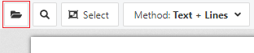
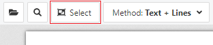
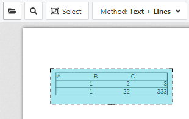
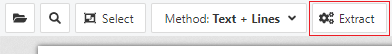
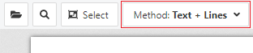
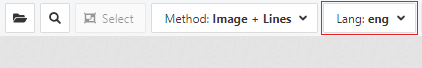

Open a PDF Document
First and formost open a PDF via the Open button on the menu bar. See the picture below:
Selecting a table
Press the Select button on the toolbar to enter select table mode.
The cursor on the PDF document will switch to be a crosshair. Press and hold the mouse just outside the top right of the desired table in the PDF document. Drag a box covering the table. Release the mouse. It should look as follows:
Running the extraction
Once the appropriate extraction method is chosen (described in the next section), click the Extract button.
The extraction process will run and if successful the extracted table data will be presented.
Table extraction method
Use the Method Dropdown on the top left toolbar to change the extraction method.
There are four extraction methods:
- Text + Lines
- Use if the table has selectable PDF text and grid lines indicating each individual cell.
- Text + Space
- Use if the table has selectable PDF text and empty space separating columns and/or rows.
- Image + Lines
- Use if the table is a scan/image and has grid lines indicating each individual cell.
- Image + Space
- Use if the table is a scan/image and has empty space separating columns and/or rows.
Additionaly, if one of the image extraction modes are chosen, a language dropdown will appear on the toolbar. Ensure this is set to the language of the PDF table data.
Feedback
Please email any feedback.